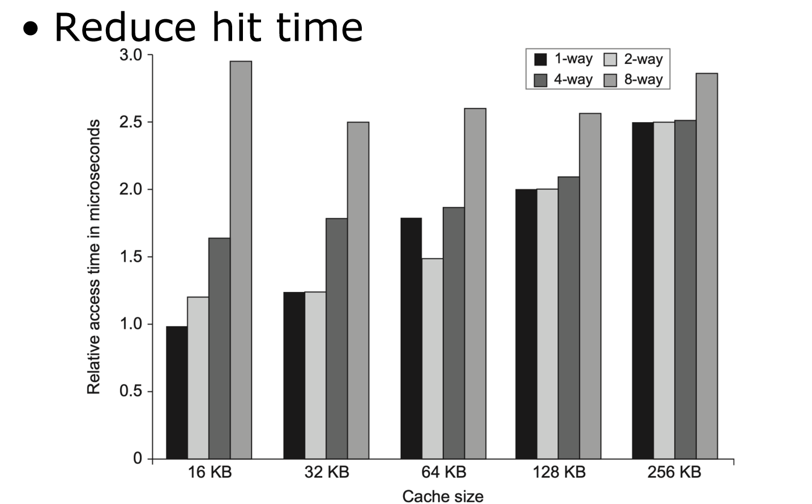
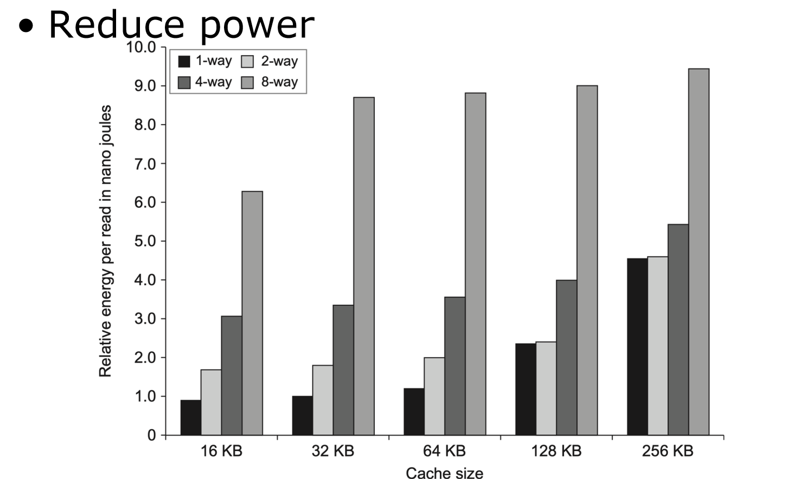
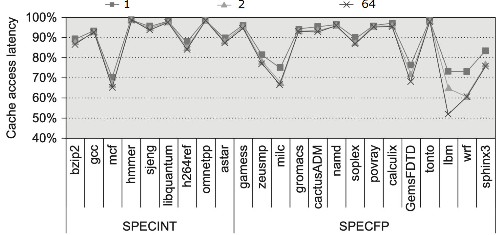
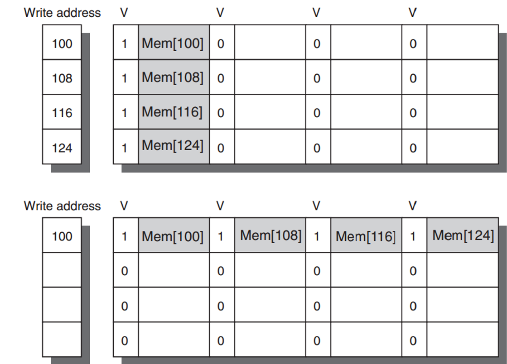

计算机体系结构2-1-1:缓存优化与性能
导言：
在第一讲中，我们建立了一个宏观认知：CPU性能的指数级增长与内存访问速度的缓慢提升之间，存在着一道巨大的鸿沟——内存墙 (The Memory Wall)。我们还知道了，架构师们用以对抗这道墙的核心武器，就是基于局部性原理构建的存储器层次结构，而其中的灵魂便是高速缓存 (Cache)。
今天，我们将深入这场战争的核心战场。如果说设计一个基本的缓存是这场战争的“诺曼底登陆”，那么我们今天要探讨的，就是如何在这片滩头阵地上，通过一系列精妙绝伦的战术，将性能压榨到极致。这不仅仅是技术的堆砌，更是设计哲学在毫厘之间的博弈。
我们将围绕一个核心目标展开：如何降低平均内存访问时间 (Average Memory Access Time, AMAT)。
$$ \text{AMAT} = (\text{Hit Time}) + (\text{Miss Rate} \times \text{Miss Penalty}) $$
这个公式是贯穿我们本讲的“最高指导原则”。它清晰地指出了我们优化的三大方向：
- 降低命中时间 (Hit Time)：让缓存的反应更快。
- 降低缺失率 (Miss Rate)：让更多的数据能在缓存里找到。
- 降低缺失代价 (Miss Penalty)：让缓存找不到数据时的惩罚时间更短。
此外，我们还必须考虑缓存带宽 (Bandwidth)和功耗 (Power Consumption)这两个至关重要的现实约束。本讲将围绕十个高级缓存优化技术展开，我们将逐一剖析它们的设计动机、实现原理以及它们所带来的精妙“取舍”。
第一部分： L1缓存的极致简约
CPU的时钟周期是由其最慢的关键路径决定的。在现代处理器中，一级缓存（L1 Cache）的访问延迟往往就是这条关键路径。因此，L1缓存的设计哲学是：不求最大，但求最快。任何可能增加哪怕一个时钟周期延迟的设计，在L1层面都必须被审慎对待。
优化技术 #1：小而简单的L1缓存 (Small and Simple First-Level Caches)
- 设计动机：为了在极高的时钟频率下（例如4-5GHz，即每周期0.2-0.25纳秒）完成一次访问，L1缓存必须在物理上尽可能小巧和简单。
- 实现策略：
- 保持小容量 (Small Size)：
- 为什么？ 物理尺寸越小，信号传播延迟越低。更大的缓存意味着更长的走线、更复杂的解码逻辑和更大的电容负载，这些都会直接增加访问延迟。
- 权衡：代价是缺失率会相对较高。但这正是存储器层次结构的核心思想：用更大但更慢的L2缓存来弥补L1的高缺失率。 
- 从图中可以清晰看到，在相同相联度下，缓存容量越大，访问时间越长。
- 采用低相联度 (Lower Associativity)：
- 为什么？ 直接映射缓存（1-way set-associative）的命中时间是所有相联度中最低的。因为它不需要复杂的比较器（只需比较一个Tag）和多路选择器（直接输出唯一的Data Block）。架构师甚至可以利用这一点，在进行Tag比较的同时，就 speculative（推测性地）将Data Block传向CPU，因为索引一旦确定，数据位置就是唯一的。如果Tag最终不匹配，再丢弃数据即可。这大大缩短了关键路径。
- 权衡：直接映射缓存的冲突缺失（Conflict Miss）率最高。这是为了极致的命中时间而牺牲缺失率的典型例子。
- 功耗优势：小容量和低相联度的缓存，每次访问需要驱动的电路更少，因此功耗也显著降低。 
- 保持小容量 (Small Size)：
优化技术 #2：路预测 (Way Prediction)
- 设计动机：我们刚刚谈到，高相联度（如8-way）虽然能降低冲突缺失，但其代价是命中时间的增加，因为CPU需要同时读取8个Tag和8个Data Block，然后进行8路比较，最后通过一个8-1的多路选择器选出正确的数据。这个过程很慢。我们能否既享受高相联度带来的低缺失率，又能获得接近直接映射的快速命中时间？
- 实现策略：预测！ 就像分支预测一样，我们可以预测下一次访问会命中哪一个“路”(Way)。
- 为每个缓存“组”(Set)增加一些预测位。这些位根据历史访问模式，预测下一次访问该组时，数据最有可能在哪一路。
- 当CPU访问时，我们只读取预测的那一路的Tag和Data Block，并进行比较。
- 如果预测正确（大部分情况），我们就得到了一个和直接映射一样快的命中。
- 如果预测错误，我们才在下一个时钟周期启动完整的N路比较。
- 权衡：
- 优点：在预测命中时，极大地降低了命中时间和功耗（因为只访问了一路）。
- 缺点：预测错误时，命中时间会增加一个周期。这需要预测的准确率足够高（通常能达到85%以上），才能获得正向收益。此外，预测逻辑本身也增加了硬件的复杂性。
第二部分：突破“带宽瓶颈”
随着超标量和多核处理器的发展，CPU对数据的“胃口”越来越大，单位时间内需要从缓存中吞吐大量数据。单个读/写端口的缓存很快会成为瓶颈。如何提升缓存的带宽？
优化技术 #3：流水线化缓存访问 (Pipelined Access) 与 多模块化缓存 (Multibanked Caches)
- 设计动机：将一次缓存访问操作分解成多个阶段，让多次访问可以重叠进行，从而提高吞吐率。
- 实现策略：
- 流水线化 (Pipelining)：就像处理器的指令流水线一样，我们可以将缓存访问分解为地址解码、Tag读取、Data读取等阶段。这使得缓存可以每个时钟周期都开始一次新的访问，即使单次访问的延迟（latency）可能因为增加了流水线寄存器而略有增加。例如，一个4周期延迟的流水线缓存，其吞-吐率可以达到单周期非流水线缓存的4倍。
- 多模块化 (Multibanking)：将一块大的缓存逻辑上分割成多个独立的“银行”(Bank)。每个Bank都有自己的读写端口，可以独立服务访问请求。只要多次访问落在不同的Bank里，它们就可以并行处理。
- 地址交错 (Interleaving)：为了让连续的访问尽可能分散到不同Bank，我们通常采用地址交错的方式。例如，一个4-Bank的缓存，地址为
Addr的块会被映射到(Addr / BlockSize) mod 4号Bank。这样，连续访问数组元素时，请求就会均匀地分布到4个Bank上。
- 地址交错 (Interleaving)：为了让连续的访问尽可能分散到不同Bank，我们通常采用地址交错的方式。例如，一个4-Bank的缓存，地址为
- 权衡：
- 流水线化增加了单次访问的延迟，这会加重分支预测失败的惩罚，并延长“load-to-use”的延迟。
- 多模块化在多次访问命中同一个Bank时，会产生Bank冲突，此时访问必须串行化。
优化技术 #4：无锁缓存 (Nonblocking Caches)
- 设计动机：传统的缓存设计是“阻塞式”的。一旦发生缓存缺失（Cache Miss），整个缓存就会被“锁定”，直到缺失的数据从下一级存储取回为止。在这漫长的等待期间（可能是几十上百个周期），即使CPU后续的指令需要访问缓存中已经存在的数据，也无法得到服务。这在乱序执行（Out-of-Order Execution）处理器中是巨大的性能浪费。
- 实现策略：在等待缺失的同时继续服务命中 (Hit Under Miss)。
- 当发生Cache Miss时，无锁缓存不会停滞，而是记录下这次缺失请求，然后继续处理后续的内存访问。
- 如果后续访问是命中（Hit），缓存会正常返回值给CPU。
- 这种技术被称为“Hit Under Miss”。更高级的设计甚至支持“Miss Under Miss”（同时处理多个缺失）和“Hit Under Multiple Misses”。
- 为什么这是革命性的？ 它将缓存缺失的惩罚从“完全停滞”变成了“部分并行处理”。CPU的乱序执行引擎可以继续执行与缺失数据无关的指令，从而有效地隐藏了部分缺失延迟。
- 效果：

- 从图中可以看出，仅仅允许“1次命中在缺失下发生”(Hit Under Miss)，就能为整数程序带来约9%的性能提升，为浮点程序带来12.5%的提升。允许更多并发（如64次），提升会更明显。这是现代高性能处理器必备的核心技术。
- 权衡：无锁缓存需要复杂的硬件逻辑来跟踪所有正在处理中的缺失请求（需要所谓的Miss Status Holding Registers, MSHRs），硬件设计复杂度大大增加。
第三部分：化解“缺失代价”
即使我们尽力降低了缺失率，Cache Miss仍然不可避免。那么，一旦Miss发生，我们如何能让CPU尽快地从停滞中恢复过来？
优化技术 #5：关键数据优先 (Critical Word First) 与 提前重启 (Early Restart)
- 设计动机：当发生一次Cache Miss时，我们需要从内存中取回一整个缓存块（Cache Block，通常是64字节）。但CPU当前真正需要的，往往只是这个块里的某一个字（Word，4或8字节）。我们为什么要等整个64字节都传输完毕后，才让CPU继续执行呢？
- 实现策略：
- 关键数据优先 (Critical Word First)：在向内存发起请求时，明确指出哪个字是“关键数据”。内存控制器会优先传输这个字。一旦这个字到达CPU，CPU就可以立即恢复执行，而缓存则在后台继续接收该块的剩余部分。
- 提前重启 (Early Restart)：一个更简单的版本。内存仍然按顺序传输整个缓存块，但只要CPU需要的那个“关键数据”到达了，就立即将其转发给CPU，让其重启。
- 权衡：
- 优点：显著降低了缺失的有效延迟。CPU不再需要等待整个块的传输时间。
- 缺点：需要更复杂的缓存控制器和总线协议。尤其是“关键数据优先”，需要内存控制器支持非顺序的块传输。
优化技术 #6：合并写缓冲 (Merging Write Buffer)
- 设计动机：写操作（Store）通常比读操作（Load）更不紧急，CPU执行完写指令后可以继续执行后续指令，而不必等待数据真正写入内存。为了实现这一点，处理器使用了写缓冲 (Write Buffer)。CPU将写请求快速扔进写缓冲，然后就“撒手不管”了。写缓冲在后台慢慢地将数据写入缓存或内存。
- 问题来了：如果程序连续写入相邻的内存地址（例如，清空一个数组），写缓冲里可能会堆积大量针对同一个缓存块的、细碎的写请求。将这些请求逐一发往内存系统，效率极低。
- 实现策略：合并！
- 写缓冲器会检查新进入的写请求，看其地址是否能与已存在的条目合并。例如，程序先后写入地址
100和104，如果它们属于同一个缓存块，写缓冲可以将这两个写操作合并成一个对该缓存块的写请求。 
- 写缓冲器会检查新进入的写请求，看其地址是否能与已存在的条目合并。例如，程序先后写入地址
- 权衡：
- 优点：极大地减少了发往内存系统的总线事务数量，提高了写操作的带宽，并降低了功耗。
- 缺点：增加了写缓冲器的设计复杂度。同时，写缓冲的存在引入了内存一致性问题，我们将在后续多核章节深入探讨。